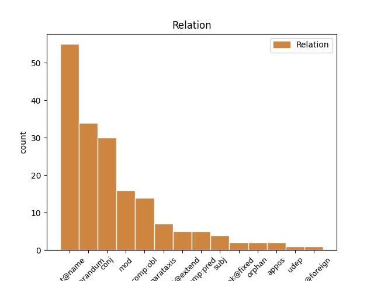
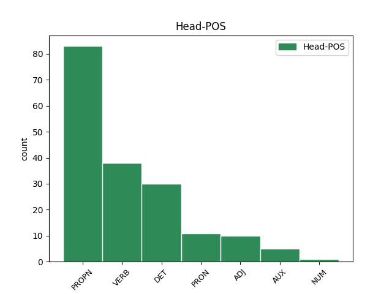
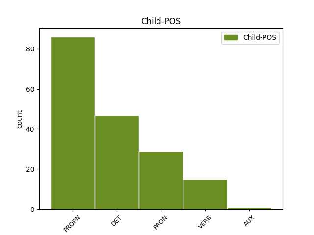

Distribution of features within this leaf



Agreement Rules sorted by frequency.
- When the dependent token is the flat multiword expression(flat@name) of the head token, and the head token is PROPN and the dependent token is PROPN.
1 eee _ _ _ _ 0 _ _ _
2 hrvaški _ _ _ _ 0 _ _ _
3 predsednik _ _ _ _ 0 _ _ _
4 stipe Stipe PROPN Npmsn Case=Nom|Gender=Masc|Number=Sing 0 _ _ _
5 mesič Mesič PROPN Npmsn Case=Nom|Gender=Masc|Number=Sing 4 flat@name _ msd=Slmei|word=Mesič
6 je _ _ _ _ 0 _ _ _
7 rekel _ _ _ _ 0 _ _ _
8 da _ _ _ _ 0 _ _ _
9 so _ _ _ _ 0 _ _ _
10 med _ _ _ _ 0 _ _ _
11 drugo _ _ _ _ 0 _ _ _
12 svetovno _ _ _ _ 0 _ _ _
13 vojno _ _ _ _ 0 _ _ _
14 istro _ _ _ _ 0 _ _ _
15 vse _ _ _ _ 0 _ _ _
16 do _ _ _ _ 0 _ _ _
17 trsta _ _ _ _ 0 _ _ _
18 osvojili _ _ _ _ 0 _ _ _
19 hrvaški _ _ _ _ 0 _ _ _
20 partizani _ _ _ _ 0 _ _ _
21 in _ _ _ _ 0 _ _ _
22 da _ _ _ _ 0 _ _ _
23 bi _ _ _ _ 0 _ _ _
24 morala _ _ _ _ 0 _ _ _
25 biti _ _ _ _ 0 _ _ _
26 slovenija _ _ _ _ 0 _ _ _
27 hvaležna _ _ _ _ 0 _ _ _
28 saj _ _ _ _ 0 _ _ _
29 bi _ _ _ _ 0 _ _ _
30 sicer _ _ _ _ 0 _ _ _
31 gledala _ _ _ _ 0 _ _ _
32 na _ _ _ _ 0 _ _ _
33 morje _ _ _ _ 0 _ _ _
34 z _ _ _ _ 0 _ _ _
35 oddaljenosti _ _ _ _ 0 _ _ _
36 dvajsetih _ _ _ _ 0 _ _ _
37 kilometrov _ _ _ _ 0 _ _ _
1 tu _ _ _ _ 0 _ _ _
2 david David PROPN Npmsn Case=Nom|Gender=Masc|Number=Sing 0 _ _ _
3 healy _ _ _ _ 0 _ _ _
4 in _ _ _ _ 0 _ _ _
5 nigel Nigel PROPN Npmsn Case=Nom|Gender=Masc|Number=Sing 2 conj _ msd=Slmei|word=Najdžl
6 worthington _ _ _ _ 0 _ _ _
7 menedžer _ _ _ _ 0 _ _ _
8 oziroma _ _ _ _ 0 _ _ _
9 selektor _ _ _ _ 0 _ _ _
10 reprezentance _ _ _ _ 0 _ _ _
1 tako _ _ _ _ 0 _ _ _
2 kot _ _ _ _ 0 _ _ _
3 sem _ _ _ _ 0 _ _ _
4 mu _ _ _ _ 0 _ _ _
5 naročil _ _ _ _ 0 _ _ _
6 tako _ _ _ _ 0 _ _ _
7 je _ _ _ _ 0 _ _ _
8 treba _ _ _ _ 0 _ _ _
9 to _ _ _ _ 0 _ _ _
10 narediti _ _ _ _ 0 _ _ _
11 eee _ _ _ _ 0 _ _ _
12 sem _ _ _ _ 0 _ _ _
13 mu _ _ _ _ 0 _ _ _
14 vse _ _ _ _ 0 _ _ _
15 lepo _ _ _ _ 0 _ _ _
16 povedal povedati VERB Vmep-sm Aspect=Perf|Gender=Masc|Number=Sing|VerbForm=Part 0 _ _ _
17 in _ _ _ _ 0 _ _ _
18 razložil razložiti VERB Vmep-sm Aspect=Perf|Gender=Masc|Number=Sing|VerbForm=Part 16 conj _ msd=Ggdd-em|word=razložu
19 eee _ _ _ _ 0 _ _ _
20 sem _ _ _ _ 0 _ _ _
21 pa _ _ _ _ 0 _ _ _
22 glih _ _ _ _ 0 _ _ _
23 malo _ _ _ _ 0 _ _ _
24 razočaran _ _ _ _ 0 _ _ _
25 z _ _ _ _ 0 _ _ _
26 vašo _ _ _ _ 0 _ _ _
27 volno _ _ _ _ 0 _ _ _
1 ja _ _ _ _ 0 _ _ _
2 to ta DET Pd-nsn Case=Nom|Gender=Neut|Number=Sing|PronType=Dem 3 reparandum _ msd=Zk-sei|word=to
3 to ta DET Pd-nsn Case=Nom|Gender=Neut|Number=Sing|PronType=Dem 0 _ _ _
4 pa _ _ _ _ 0 _ _ _
5 res _ _ _ _ 0 _ _ _
6 ja _ _ _ _ 0 _ _ _
1 kaj kaj PRON Pq-nsn Case=Nom|Gender=Neut|Number=Sing|PronType=Int 2 reparandum _ msd=Zv-sei|word=kaj
2 kaj kaj PRON Pq-nsn Case=Nom|Gender=Neut|Number=Sing|PronType=Int 0 _ _ _
3 na _ _ _ _ 0 _ _ _
4 obrazu _ _ _ _ 0 _ _ _
5 se _ _ _ _ 0 _ _ _
6 spreminja _ _ _ _ 0 _ _ _
7 pri _ _ _ _ 0 _ _ _
8 mimiki _ _ _ _ 0 _ _ _
9 ? _ _ _ _ 0 _ _ _
1 tako _ _ _ _ 0 _ _ _
2 kot _ _ _ _ 0 _ _ _
3 sem _ _ _ _ 0 _ _ _
4 mu _ _ _ _ 0 _ _ _
5 naročil _ _ _ _ 0 _ _ _
6 tako _ _ _ _ 0 _ _ _
7 je _ _ _ _ 0 _ _ _
8 treba _ _ _ _ 0 _ _ _
9 to _ _ _ _ 0 _ _ _
10 narediti _ _ _ _ 0 _ _ _
11 eee _ _ _ _ 0 _ _ _
12 sem _ _ _ _ 0 _ _ _
13 mu on PRON Pp3msd--y Case=Dat|Gender=Masc|Number=Sing|Person=3|PronType=Prs|Variant=Short 16 comp:obl _ msd=Zotmed--k|word=mu
14 vse _ _ _ _ 0 _ _ _
15 lepo _ _ _ _ 0 _ _ _
16 povedal povedati VERB Vmep-sm Aspect=Perf|Gender=Masc|Number=Sing|VerbForm=Part 0 _ _ _
17 in _ _ _ _ 0 _ _ _
18 razložil _ _ _ _ 0 _ _ _
19 eee _ _ _ _ 0 _ _ _
20 sem _ _ _ _ 0 _ _ _
21 pa _ _ _ _ 0 _ _ _
22 glih _ _ _ _ 0 _ _ _
23 malo _ _ _ _ 0 _ _ _
24 razočaran _ _ _ _ 0 _ _ _
25 z _ _ _ _ 0 _ _ _
26 vašo _ _ _ _ 0 _ _ _
27 volno _ _ _ _ 0 _ _ _
1 eee _ _ _ _ 0 _ _ _
2 andrej Andrej PROPN Npmsn Case=Nom|Gender=Masc|Number=Sing 0 _ _ _
3 blatnik _ _ _ _ 0 _ _ _
4 maja _ _ _ _ 0 _ _ _
5 novak _ _ _ _ 0 _ _ _
6 berta _ _ _ _ 0 _ _ _
7 bojetu _ _ _ _ 0 _ _ _
8 alojz _ _ _ _ 0 _ _ _
9 ihan _ _ _ _ 0 _ _ _
10 aleš _ _ _ _ 0 _ _ _
11 debeljak _ _ _ _ 0 _ _ _
12 franjo _ _ _ _ 0 _ _ _
13 frančič _ _ _ _ 0 _ _ _
14 [gap] _ _ _ _ 0 _ _ _
15 igor _ _ _ _ 0 _ _ _
16 zabel _ _ _ _ 0 _ _ _
17 igor Igor PROPN Npmsn Case=Nom|Gender=Masc|Number=Sing 2 parataxis _ msd=Slmei|word=Igor
18 bratož _ _ _ _ 0 _ _ _
1 pol _ _ _ _ 0 _ _ _
2 pa _ _ _ _ 0 _ _ _
3 v _ _ _ _ 0 _ _ _
4 oklepaju _ _ _ _ 0 _ _ _
5 piše _ _ _ _ 0 _ _ _
6 le _ _ _ _ 0 _ _ _
7 za _ _ _ _ 0 _ _ _
8 ta _ _ _ _ 0 _ _ _
9 to ta DET Pd-fsa Case=Acc|Gender=Fem|Number=Sing|PronType=Dem 0 _ _ _
10 pa _ _ _ _ 0 _ _ _
11 to ta DET Pd-fsa Case=Acc|Gender=Fem|Number=Sing|PronType=Dem 9 conj _ msd=Zk-zet|word=to
12 vizo _ _ _ _ 0 _ _ _
13 lahko _ _ _ _ 0 _ _ _
14 trideset _ _ _ _ 0 _ _ _
15 dni _ _ _ _ 0 _ _ _
16 ostaneš _ _ _ _ 0 _ _ _
1 aha _ _ _ _ 0 _ _ _
2 kul _ _ _ _ 0 _ _ _
3 eee _ _ _ _ 0 _ _ _
4 čakaj _ _ _ _ 0 _ _ _
5 še _ _ _ _ 0 _ _ _
6 kako _ _ _ _ 0 _ _ _
7 vprašanje _ _ _ _ 0 _ _ _
8 eee _ _ _ _ 0 _ _ _
9 to _ _ _ _ 0 _ _ _
10 pa _ _ _ _ 0 _ _ _
11 eee _ _ _ _ 0 _ _ _
12 če _ _ _ _ 0 _ _ _
13 če _ _ _ _ 0 _ _ _
14 nabavim _ _ _ _ 0 _ _ _
15 to _ _ _ _ 0 _ _ _
16 imate _ _ _ _ 0 _ _ _
17 k _ _ _ _ 0 _ _ _
18 [gap] _ _ _ _ 0 _ _ _
19 kako _ _ _ _ 0 _ _ _
20 je _ _ _ _ 0 _ _ _
21 tako _ _ _ _ 0 _ _ _
22 zdaj _ _ _ _ 0 _ _ _
23 ena _ _ _ _ 0 _ _ _
24 cena _ _ _ _ 0 _ _ _
25 za _ _ _ _ 0 _ _ _
26 en _ _ _ _ 0 _ _ _
27 mesec _ _ _ _ 0 _ _ _
28 če _ _ _ _ 0 _ _ _
29 bi _ _ _ _ 0 _ _ _
30 jaz _ _ _ _ 0 _ _ _
31 to _ _ _ _ 0 _ _ _
32 hotel hoteti VERB Vmpp-sm Aspect=Imp|Gender=Masc|Number=Sing|VerbForm=Part 36 reparandum _ msd=Ggnd-em|word=hotu
33 pač _ _ _ _ 0 _ _ _
34 en _ _ _ _ 0 _ _ _
35 mesec _ _ _ _ 0 _ _ _
36 hotel hoteti VERB Vmpp-sm Aspect=Imp|Gender=Masc|Number=Sing|VerbForm=Part 0 _ _ _
37 to _ _ _ _ 0 _ _ _
38 jest _ _ _ _ 0 _ _ _
39 ? _ _ _ _ 0 _ _ _
1 te _ _ _ _ 0 _ _ _
2 proge _ _ _ _ 0 _ _ _
3 gor _ _ _ _ 0 _ _ _
4 recimo _ _ _ _ 0 _ _ _
5 eee _ _ _ _ 0 _ _ _
6 sedežnice _ _ _ _ 0 _ _ _
7 vlečnice _ _ _ _ 0 _ _ _
8 pa _ _ _ _ 0 _ _ _
9 to ta DET Pd-nsn Case=Nom|Gender=Neut|Number=Sing|PronType=Dem 0 _ _ _
10 vse ves DET Pg-nsn Case=Nom|Gender=Neut|Number=Sing|PronType=Tot 9 mod _ msd=Zc-sei|word=vse
11 je _ _ _ _ 0 _ _ _
12 recimo _ _ _ _ 0 _ _ _
13 šest _ _ _ _ 0 _ _ _
14 petnajst _ _ _ _ 0 _ _ _
15 trinajst _ _ _ _ 0 _ _ _
16 in _ _ _ _ 0 _ _ _
17 ob _ _ _ _ 0 _ _ _
18 in _ _ _ _ 0 _ _ _
19 proga _ _ _ _ 0 _ _ _
20 je _ _ _ _ 0 _ _ _
21 recimo _ _ _ _ 0 _ _ _
22 rdeča _ _ _ _ 0 _ _ _
23 narisana _ _ _ _ 0 _ _ _
24 pač _ _ _ _ 0 _ _ _
25 rdeča _ _ _ _ 0 _ _ _
26 srednje _ _ _ _ 0 _ _ _
27 težka _ _ _ _ 0 _ _ _
28 ali _ _ _ _ 0 _ _ _
29 pa _ _ _ _ 0 _ _ _
30 modra _ _ _ _ 0 _ _ _
31 pa _ _ _ _ 0 _ _ _
32 je _ _ _ _ 0 _ _ _
33 številka _ _ _ _ 0 _ _ _
34 sedem _ _ _ _ 0 _ _ _
35 ali _ _ _ _ 0 _ _ _
36 pa _ _ _ _ 0 _ _ _
37 ta _ _ _ _ 0 _ _ _
38 je _ _ _ _ 0 _ _ _
39 devet _ _ _ _ 0 _ _ _
40 ali _ _ _ _ 0 _ _ _
41 pa _ _ _ _ 0 _ _ _
42 ne _ _ _ _ 0 _ _ _
43 vem _ _ _ _ 0 _ _ _
44 koliko _ _ _ _ 0 _ _ _
1 ja _ _ _ _ 0 _ _ _
2 kaj kaj PRON Pq-nsn Case=Nom|Gender=Neut|Number=Sing|PronType=Int 0 _ _ _
3 takega tak DET Pd-nsg Case=Gen|Gender=Neut|Number=Sing|PronType=Dem 2 mod _ msd=Zk-ser|word=tazga
1 ja _ _ _ _ 0 _ _ _
2 [gap] _ _ _ _ 0 _ _ _
3 najbolj _ _ _ _ 0 _ _ _
4 dobro _ _ _ _ 0 _ _ _
5 tudi _ _ _ _ 0 _ _ _
6 kras _ _ _ _ 0 _ _ _
7 je _ _ _ _ 0 _ _ _
8 blizu _ _ _ _ 0 _ _ _
9 kar _ _ _ _ 0 _ _ _
10 je _ _ _ _ 0 _ _ _
11 tudi _ _ _ _ 0 _ _ _
12 super _ _ _ _ 0 _ _ _
13 eee _ _ _ _ 0 _ _ _
14 pa _ _ _ _ 0 _ _ _
15 veš _ _ _ _ 0 _ _ _
16 tam _ _ _ _ 0 _ _ _
17 se _ _ _ _ 0 _ _ _
18 ti _ _ _ _ 0 _ _ _
19 odpre _ _ _ _ 0 _ _ _
20 nekaj nekaj DET Pi-nsa Case=Acc|Gender=Neut|Number=Sing|PronType=Ind 0 _ _ _
21 česar kar PRON Pr-nsg Case=Gen|Gender=Neut|Number=Sing|PronType=Rel 20 mod _ msd=Zz-ser|word=česar
22 mislim _ _ _ _ 0 _ _ _
23 širina _ _ _ _ 0 _ _ _
24 ja _ _ _ _ 0 _ _ _
25 v _ _ _ _ 0 _ _ _
26 bistvu _ _ _ _ 0 _ _ _
1 pol _ _ _ _ 0 _ _ _
2 imela _ _ _ _ 0 _ _ _
3 pa _ _ _ _ 0 _ _ _
4 sošolko _ _ _ _ 0 _ _ _
5 [audience:laughter] _ _ _ _ 0 _ _ _
6 ki _ _ _ _ 0 _ _ _
7 je _ _ _ _ 0 _ _ _
8 bila biti AUX Va-p-sf Gender=Fem|Number=Sing|VerbForm=Part 0 _ _ _
9 pa _ _ _ _ 0 _ _ _
10 ana Ana PROPN Npfsn Case=Nom|Gender=Fem|Number=Sing 8 comp:pred _ msd=Slzei|word=Ana
11 hribar _ _ _ _ 0 _ _ _
1 poljaki _ _ _ _ 0 _ _ _
2 bodo _ _ _ _ 0 _ _ _
3 naslednjo _ _ _ _ 0 _ _ _
4 tekmo _ _ _ _ 0 _ _ _
5 igrali _ _ _ _ 0 _ _ _
6 s _ _ _ _ 0 _ _ _
7 san San PROPN Npmsn Case=Nom|Gender=Masc|Number=Sing 0 _ _ _
8 marinom Marino PROPN Npmsi Case=Ins|Gender=Masc|Number=Sing 7 mod _ msd=Slmeo|word=Marinom
1 zdaj _ _ _ _ 0 _ _ _
2 če _ _ _ _ 0 _ _ _
3 bo _ _ _ _ 0 _ _ _
4 kje _ _ _ _ 0 _ _ _
5 kak _ _ _ _ 0 _ _ _
6 pravi _ _ _ _ 0 _ _ _
7 kot _ _ _ _ 0 _ _ _
8 že _ _ _ _ 0 _ _ _
9 pri _ _ _ _ 0 _ _ _
10 vas _ _ _ _ 0 _ _ _
11 nič nič DET Pz-nsn Case=Nom|Gender=Neut|Number=Sing|PronType=Neg 12 mod _ msd=Zl-sei|word=nič
12 hudega hud ADJ Agpnsg Case=Gen|Degree=Pos|Gender=Neut|Number=Sing 0 _ _ _
13 boste _ _ _ _ 0 _ _ _
14 pač _ _ _ _ 0 _ _ _
15 imeli _ _ _ _ 0 _ _ _
16 drugačno _ _ _ _ 0 _ _ _
17 sliko _ _ _ _ 0 _ _ _
1 si _ _ _ _ 0 _ _ _
2 mi _ _ _ _ 0 _ _ _
3 povedala _ _ _ _ 0 _ _ _
4 ja _ _ _ _ 0 _ _ _
5 sem _ _ _ _ 0 _ _ _
6 pa _ _ _ _ 0 _ _ _
7 že _ _ _ _ 0 _ _ _
8 vsem ves DET Pg-mpd Case=Dat|Gender=Masc|Number=Plur|PronType=Tot 9 comp:obl _ msd=Zc-mmd|word=vsem
9 povedal povedati VERB Vmep-sm Aspect=Perf|Gender=Masc|Number=Sing|VerbForm=Part 0 _ _ _
10 da _ _ _ _ 0 _ _ _
11 prideš _ _ _ _ 0 _ _ _
1 eee _ _ _ _ 0 _ _ _
2 pol _ _ _ _ 0 _ _ _
3 smo _ _ _ _ 0 _ _ _
4 danes _ _ _ _ 0 _ _ _
5 smo _ _ _ _ 0 _ _ _
6 pri _ _ _ _ 0 _ _ _
7 maši _ _ _ _ 0 _ _ _
8 peli _ _ _ _ 0 _ _ _
9 smo _ _ _ _ 0 _ _ _
10 jo _ _ _ _ 0 _ _ _
11 povabili _ _ _ _ 0 _ _ _
12 zraven _ _ _ _ 0 _ _ _
13 pol _ _ _ _ 0 _ _ _
14 je _ _ _ _ 0 _ _ _
15 pa _ _ _ _ 0 _ _ _
16 rekla _ _ _ _ 0 _ _ _
17 ja _ _ _ _ 0 _ _ _
18 bom _ _ _ _ 0 _ _ _
19 prišla _ _ _ _ 0 _ _ _
20 pol _ _ _ _ 0 _ _ _
21 mi _ _ _ _ 0 _ _ _
22 je _ _ _ _ 0 _ _ _
23 pa _ _ _ _ 0 _ _ _
24 danes _ _ _ _ 0 _ _ _
25 malo _ _ _ _ 0 _ _ _
26 pred _ _ _ _ 0 _ _ _
27 mašo _ _ _ _ 0 _ _ _
28 mi _ _ _ _ 0 _ _ _
29 je _ _ _ _ 0 _ _ _
30 sporočilo _ _ _ _ 0 _ _ _
31 poslala _ _ _ _ 0 _ _ _
32 da _ _ _ _ 0 _ _ _
33 nekaj nekaj DET Pi-nsn Case=Nom|Gender=Neut|Number=Sing|PronType=Ind 35 subj _ msd=Zn-sei|word=neki
34 vmes _ _ _ _ 0 _ _ _
35 prišlo priti VERB Vmep-sn Aspect=Perf|Gender=Neut|Number=Sing|VerbForm=Part 0 _ _ _
36 in _ _ _ _ 0 _ _ _
37 ne _ _ _ _ 0 _ _ _
38 more _ _ _ _ 0 _ _ _
1 četrt _ _ _ _ 0 _ _ _
2 sirove sirov ADJ Aspfsg Case=Gen|Degree=Pos|Gender=Fem|Number=Sing|Poss=Yes|PronType=Prs 0 _ _ _
3 pa _ _ _ _ 0 _ _ _
4 četrt _ _ _ _ 0 _ _ _
5 neke _ _ _ _ 0 _ _ _
6 [:voice] _ _ _ _ 0 _ _ _
7 take _ _ _ _ 0 _ _ _
8 neke nek DET Pi-fsg Case=Gen|Gender=Fem|Number=Sing|PronType=Ind 2 conj _ msd=Zn-zer|word=neke
9 z _ _ _ _ 0 _ _ _
10 mesom _ _ _ _ 0 _ _ _
11 no _ _ _ _ 0 _ _ _
1 tale tale DET Pd-msn Case=Nom|Gender=Masc|Number=Sing|PronType=Dem 2 mod _ msd=Zk-mei|word=tele
2 malbuch Malbuch PROPN Npmsn Case=Nom|Gender=Masc|Number=Sing 0 _ _ _
3 je _ _ _ _ 0 _ _ _
4 pa _ _ _ _ 0 _ _ _
5 fajn _ _ _ _ 0 _ _ _
6 ta _ _ _ _ 0 _ _ _
1 no _ _ _ _ 0 _ _ _
2 v _ _ _ _ 0 _ _ _
3 dvesto _ _ _ _ 0 _ _ _
4 petdeset _ _ _ _ 0 _ _ _
5 letih _ _ _ _ 0 _ _ _
6 smo _ _ _ _ 0 _ _ _
7 ga _ _ _ _ 0 _ _ _
8 tako _ _ _ _ 0 _ _ _
9 posvojili _ _ _ _ 0 _ _ _
10 da _ _ _ _ 0 _ _ _
11 smo _ _ _ _ 0 _ _ _
12 zanj zame PRON Pp3msa--b Case=Acc|Gender=Masc|Number=Sing|Person=3|PronType=Prs|Variant=Bound 13 udep _ msd=Zotmet--z|word=zanj
13 pripravljeni pripravljen ADJ Appmpn Case=Nom|Degree=Pos|Gender=Masc|Number=Plur|VerbForm=Part 0 _ _ _
14 narediti _ _ _ _ 0 _ _ _
15 marsikaj _ _ _ _ 0 _ _ _
1 vse ves DET Pg-nsn Case=Nom|Gender=Neut|Number=Sing|PronType=Tot 3 subj _ msd=Zc-sei|word=huse
2 tako _ _ _ _ 0 _ _ _
3 sito sit ADJ Agpnsn Case=Nom|Degree=Pos|Gender=Neut|Number=Sing 0 _ _ _
4 kot _ _ _ _ 0 _ _ _
5 pa _ _ _ _ 0 _ _ _
1 pajdaš _ _ _ _ 0 _ _ _
2 bil biti AUX Va-p-sm Gender=Masc|Number=Sing|VerbForm=Part 0 _ _ _
3 so _ _ _ _ 0 _ _ _
4 bili biti AUX Va-p-pm Gender=Masc|Number=Plur|VerbForm=Part 2 comp:pred _ msd=Gp-d-mm|word=bli
5 dober _ _ _ _ 0 _ _ _
6 pajdaš _ _ _ _ 0 _ _ _
7 mojemu _ _ _ _ 0 _ _ _
8 očetu _ _ _ _ 0 _ _ _
9 pa _ _ _ _ 0 _ _ _
10 te _ _ _ _ 0 _ _ _
11 so _ _ _ _ 0 _ _ _
12 že _ _ _ _ 0 _ _ _
13 gor _ _ _ _ 0 _ _ _
14 prišli _ _ _ _ 0 _ _ _
15 ka _ _ _ _ 0 _ _ _
16 tisti _ _ _ _ 0 _ _ _
17 to _ _ _ _ 0 _ _ _
18 dela _ _ _ _ 0 _ _ _
19 pa _ _ _ _ 0 _ _ _
20 so _ _ _ _ 0 _ _ _
21 ga _ _ _ _ 0 _ _ _
22 iskali _ _ _ _ 0 _ _ _
1 eee _ _ _ _ 0 _ _ _
2 eee _ _ _ _ 0 _ _ _
3 ona on PRON Pp3fsn Case=Nom|Gender=Fem|Number=Sing|Person=3|PronType=Prs 8 reparandum _ msd=Zotzei|word=ona
4 ona _ _ _ _ 0 _ _ _
5 je _ _ _ _ 0 _ _ _
6 ona _ _ _ _ 0 _ _ _
7 je _ _ _ _ 0 _ _ _
8 taka tak DET Pd-fsn Case=Nom|Gender=Fem|Number=Sing|PronType=Dem 0 _ _ _
1 [audience:laughter] _ _ _ _ 0 _ _ _
2 pa _ _ _ _ 0 _ _ _
3 še _ _ _ _ 0 _ _ _
4 kucler kucler PROPN Npfsn Case=Nom|Gender=Fem|Number=Sing 5 mod _ msd=Slzei|word=Kucler
5 dolinarjeva Dolinarjev ADJ Aspfsn Case=Nom|Degree=Pos|Gender=Fem|Number=Sing|Poss=Yes|PronType=Prs 0 _ _ _
1 pa _ _ _ _ 0 _ _ _
2 lani _ _ _ _ 0 _ _ _
3 so _ _ _ _ 0 _ _ _
4 lani _ _ _ _ 0 _ _ _
5 bilo biti VERB Va-p-sn Gender=Neut|Number=Sing|VerbForm=Part 0 _ _ _
6 samo _ _ _ _ 0 _ _ _
7 en _ _ _ _ 0 _ _ _
8 dan _ _ _ _ 0 _ _ _
9 ampak _ _ _ _ 0 _ _ _
10 to ta DET Pd-nsn Case=Nom|Gender=Neut|Number=Sing|PronType=Dem 5 conj _ msd=Zk-sei|word=to
11 izjemoma _ _ _ _ 0 _ _ _
12 ne _ _ _ _ 0 _ _ _
13 … _ _ _ _ 0 _ _ _
14 mhm _ _ _ _ 0 _ _ _
1 se _ _ _ _ 0 _ _ _
2 pravi _ _ _ _ 0 _ _ _
3 rezultat _ _ _ _ 0 _ _ _
4 za _ _ _ _ 0 _ _ _
5 žide _ _ _ _ 0 _ _ _
6 je _ _ _ _ 0 _ _ _
7 bil biti AUX Va-p-sm Gender=Masc|Number=Sing|VerbForm=Part 0 _ _ _
8 v _ _ _ _ 0 _ _ _
9 kateremkoli _ _ _ _ 0 _ _ _
10 taborišču _ _ _ _ 0 _ _ _
11 že _ _ _ _ 0 _ _ _
12 so _ _ _ _ 0 _ _ _
13 se _ _ _ _ 0 _ _ _
14 znašli _ _ _ _ 0 _ _ _
15 isti isti DET Pi-msn Case=Nom|Gender=Masc|Number=Sing|PronType=Ind 7 comp:pred _ msd=Zn-mei|word=isti
1 tri _ _ _ _ 0 _ _ _
2 tavžent _ _ _ _ 0 _ _ _
3 kart _ _ _ _ 0 _ _ _
4 je _ _ _ _ 0 _ _ _
5 samo _ _ _ _ 0 _ _ _
6 ven _ _ _ _ 0 _ _ _
7 šlo _ _ _ _ 0 _ _ _
8 veš _ _ _ _ 0 _ _ _
9 kaj kaj PRON Pq-nsn Case=Nom|Gender=Neut|Number=Sing|PronType=Int 0 _ _ _
10 to ta DET Pd-nsn Case=Nom|Gender=Neut|Number=Sing|PronType=Dem 9 subj _ msd=Zk-sei|word=to
1 kaj _ _ _ _ 0 _ _ _
2 te _ _ _ _ 0 _ _ _
3 zdaj _ _ _ _ 0 _ _ _
4 če _ _ _ _ 0 _ _ _
5 pride _ _ _ _ 0 _ _ _
6 en _ _ _ _ 0 _ _ _
7 oni _ _ _ _ 0 _ _ _
8 eee _ _ _ _ 0 _ _ _
9 vlomilec _ _ _ _ 0 _ _ _
10 ne _ _ _ _ 0 _ _ _
11 bo _ _ _ _ 0 _ _ _
12 videl _ _ _ _ 0 _ _ _
13 vse ves DET Pg-nsa Case=Acc|Gender=Neut|Number=Sing|PronType=Tot 0 _ _ _
14 vse ves DET Pg-nsa Case=Acc|Gender=Neut|Number=Sing|PronType=Tot 13 appos _ msd=Zc-set|word=vse
15 kaj _ _ _ _ 0 _ _ _
16 imamo _ _ _ _ 0 _ _ _
17 kje _ _ _ _ 0 _ _ _
1 ne _ _ _ _ 0 _ _ _
2 ja _ _ _ _ 0 _ _ _
3 kaj _ _ _ _ 0 _ _ _
4 pa _ _ _ _ 0 _ _ _
5 je _ _ _ _ 0 _ _ _
6 te _ _ _ _ 0 _ _ _
7 ja _ _ _ _ 0 _ _ _
8 kaj _ _ _ _ 0 _ _ _
9 pa _ _ _ _ 0 _ _ _
10 more _ _ _ _ 0 _ _ _
11 more _ _ _ _ 0 _ _ _
12 saj _ _ _ _ 0 _ _ _
13 to ta DET Pd-nsn Case=Nom|Gender=Neut|Number=Sing|PronType=Dem 16 reparandum _ msd=Zk-sei|word=to
14 eee _ _ _ _ 0 _ _ _
15 vse _ _ _ _ 0 _ _ _
16 hudo hud ADJ Agpnsn Case=Nom|Degree=Pos|Gender=Neut|Number=Sing 0 _ _ _
17 mine _ _ _ _ 0 _ _ _
18 ne _ _ _ _ 0 _ _ _
19 eee _ _ _ _ 0 _ _ _
20 ja _ _ _ _ 0 _ _ _
1 letos _ _ _ _ 0 _ _ _
2 smo _ _ _ _ 0 _ _ _
3 prvič _ _ _ _ 0 _ _ _
4 poslali _ _ _ _ 0 _ _ _
5 enega _ _ _ _ 0 _ _ _
6 našega naš DET Ps1msap Case=Acc|Gender=Masc|Number=Sing|Number[psor]=Plur|Person=1|Poss=Yes|PronType=Prs 10 reparandum _ msd=Zspmetm|word=našega
7 eee _ _ _ _ 0 _ _ _
8 se _ _ _ _ 0 _ _ _
9 pravi _ _ _ _ 0 _ _ _
10 enega en NUM Mlpmsa Case=Acc|Gender=Masc|Number=Sing|NumForm=Word|NumType=Card 0 _ _ _
11 een _ _ _ _ 0 _ _ _
12 ne _ _ _ _ 0 _ _ _
13 morem _ _ _ _ 0 _ _ _
14 reči _ _ _ _ 0 _ _ _
15 najstnika _ _ _ _ 0 _ _ _
16 ne _ _ _ _ 0 _ _ _
1 aaa _ _ _ _ 0 _ _ _
2 spreminja _ _ _ _ 0 _ _ _
3 pa _ _ _ _ 0 _ _ _
4 se _ _ _ _ 0 _ _ _
5 vsebina _ _ _ _ 0 _ _ _
6 operacije _ _ _ _ 0 _ _ _
7 nato Nato PROPN Npmsn Case=Nom|Gender=Masc|Number=Sing 0 _ _ _
8 training _ _ _ _ 0 _ _ _
9 mission _ _ _ _ 0 _ _ _
10 in _ _ _ _ 0 _ _ _
11 irak Irak PROPN Npmsn Case=Nom|Gender=Masc|Number=Sing 7 flat@foreign _ msd=Slmei|word=Irak
1 potem _ _ _ _ 0 _ _ _
2 mi jaz PRON Pp1mpn Case=Nom|Gender=Masc|Number=Plur|Person=1|PronType=Prs 8 reparandum _ msd=Zopmmi|word=mi
3 pa _ _ _ _ 0 _ _ _
4 potem _ _ _ _ 0 _ _ _
5 mi _ _ _ _ 0 _ _ _
6 boste _ _ _ _ 0 _ _ _
7 pa _ _ _ _ 0 _ _ _
8 pripravili pripraviti VERB Vmep-pm Aspect=Perf|Gender=Masc|Number=Plur|VerbForm=Part 0 _ _ _
9 na _ _ _ _ 0 _ _ _
10 strani _ _ _ _ 0 _ _ _
11 in _ _ _ _ 0 _ _ _
12 pol _ _ _ _ 0 _ _ _
13 vaš _ _ _ _ 0 _ _ _
14 komentar _ _ _ _ 0 _ _ _
1 ja _ _ _ _ 0 _ _ _
2 … _ _ _ _ 0 _ _ _
3 jaz _ _ _ _ 0 _ _ _
4 sem _ _ _ _ 0 _ _ _
5 pa _ _ _ _ 0 _ _ _
6 tu _ _ _ _ 0 _ _ _
7 v _ _ _ _ 0 _ _ _
8 vznožju _ _ _ _ 0 _ _ _
9 pohorja Pohorje PROPN Npnsg Case=Gen|Gender=Neut|Number=Sing 0 _ _ _
10 zelenega _ _ _ _ 0 _ _ _
11 pohorja Pohorje PROPN Npnsg Case=Gen|Gender=Neut|Number=Sing 9 appos _ msd=Slser|word=Poharja
12 [gap] _ _ _ _ 0 _ _ _
Disagree Examples:
1 in _ _ _ _ 0 _ _ _
2 pač _ _ _ _ 0 _ _ _
3 ne _ _ _ _ 0 _ _ _
4 vem _ _ _ _ 0 _ _ _
5 zdaj _ _ _ _ 0 _ _ _
6 kaj _ _ _ _ 0 _ _ _
7 ali _ _ _ _ 0 _ _ _
8 imeli _ _ _ _ 0 _ _ _
9 svoj _ _ _ _ 0 _ _ _
10 lasten _ _ _ _ 0 _ _ _
11 piknik _ _ _ _ 0 _ _ _
12 ali _ _ _ _ 0 _ _ _
13 kaj _ _ _ _ 0 _ _ _
14 jaz _ _ _ _ 0 _ _ _
15 vem _ _ _ _ 0 _ _ _
16 nekaj nekaj DET Pi-nsa Case=Acc|Gender=Neut|Number=Sing|PronType=Ind 0 _ _ _
17 v _ _ _ _ 0 _ _ _
18 bistvu _ _ _ _ 0 _ _ _
19 čim _ _ _ _ 0 _ _ _
20 bolj _ _ _ _ 0 _ _ _
21 takega tak DET Pd-msa Case=Acc|Gender=Masc|Number=Sing|PronType=Dem 16 mod _ msd=Zk-met|word=tazga
22 neformalnega _ _ _ _ 0 _ _ _
23 bi _ _ _ _ 0 _ _ _
24 jaz _ _ _ _ 0 _ _ _
1 jezus Jezus PROPN Npmsn Case=Nom|Gender=Masc|Number=Sing 0 _ _ _
2 marija Marija PROPN Npfsn Case=Nom|Gender=Fem|Number=Sing 1 unk@fixed _ msd=Slzei|word=jozusmarija[split_2-2]
1 jezus Jezus PROPN Npmsn Case=Nom|Gender=Masc|Number=Sing 0 _ _ _
2 marija Marija PROPN Npfsn Case=Nom|Gender=Fem|Number=Sing 1 unk@fixed _ msd=Slzei|word=jozusmarija[split_2-2]
3 … _ _ _ _ 0 _ _ _
4 ja _ _ _ _ 0 _ _ _
5 saj _ _ _ _ 0 _ _ _
6 tako _ _ _ _ 0 _ _ _
7 je _ _ _ _ 0 _ _ _
8 če _ _ _ _ 0 _ _ _
9 se _ _ _ _ 0 _ _ _
10 ti _ _ _ _ 0 _ _ _
11 prikaže _ _ _ _ 0 _ _ _
12 grčija _ _ _ _ 0 _ _ _
1 to _ _ _ _ 0 _ _ _
2 so _ _ _ _ 0 _ _ _
3 ljudje _ _ _ _ 0 _ _ _
4 ki _ _ _ _ 0 _ _ _
5 imajo _ _ _ _ 0 _ _ _
6 globlje _ _ _ _ 0 _ _ _
7 eee _ _ _ _ 0 _ _ _
8 pobude _ _ _ _ 0 _ _ _
9 za _ _ _ _ 0 _ _ _
10 za _ _ _ _ 0 _ _ _
11 storitev _ _ _ _ 0 _ _ _
12 tega _ _ _ _ 0 _ _ _
13 dejanja _ _ _ _ 0 _ _ _
14 in _ _ _ _ 0 _ _ _
15 brez _ _ _ _ 0 _ _ _
16 skrbi _ _ _ _ 0 _ _ _
17 bodite _ _ _ _ 0 _ _ _
18 da _ _ _ _ 0 _ _ _
19 jim on PRON Pp3mpd--y Case=Dat|Gender=Masc|Number=Plur|Person=3|PronType=Prs|Variant=Short 25 comp:obl _ msd=Zotmmd--k|word=jim
20 hujša _ _ _ _ 0 _ _ _
21 zagrožena _ _ _ _ 0 _ _ _
22 kazen _ _ _ _ 0 _ _ _
23 ne _ _ _ _ 0 _ _ _
24 bo _ _ _ _ 0 _ _ _
25 preprečila preprečiti VERB Vmep-sf Aspect=Perf|Gender=Fem|Number=Sing|VerbForm=Part 0 _ _ _
26 da _ _ _ _ 0 _ _ _
27 to _ _ _ _ 0 _ _ _
28 naredijo _ _ _ _ 0 _ _ _
1 vsaj _ _ _ _ 0 _ _ _
2 ta ta DET Pd-fsn Case=Nom|Gender=Fem|Number=Sing|PronType=Dem 4 reparandum _ msd=Zk-zei|word=ta
3 eee _ _ _ _ 0 _ _ _
4 to ta DET Pd-nsa Case=Acc|Gender=Neut|Number=Sing|PronType=Dem 0 _ _ _
5 razumem _ _ _ _ 0 _ _ _
6 … _ _ _ _ 0 _ _ _
7 ja _ _ _ _ 0 _ _ _